“Dialogue Dash Junior”
Teacher guide
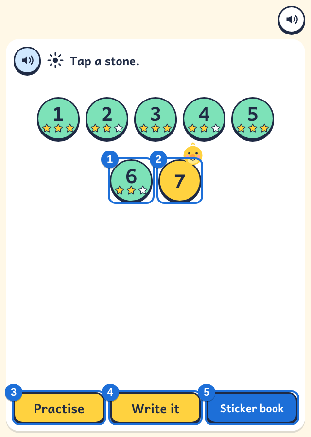
What your pupils see: seven stepping stones, one for each level.
A tap-only game that teaches dialogue writing to Primary 2 pupils: speech marks, the little marks, building a sentence, and starting a new line for each speaker.
1. What you need to know first
What the game does
- Pupils play short rounds of 5 questions. Every round earns a sticker.
- There are 7 levels. Each level has 10 questions, and a round draws 5 of them.
- Pupils never type a password. They tap their own name.
- You see one table per class: stars, last played, and the rule each pupil misses most.
What you do
- Sign in on the teacher page.
- Make a class and paste in the names.
- Print the class code card.
- Type the code once on each tablet.
The seven levels
| Level | The child… |
|---|
| 1 Who is talking? | taps the words someone says |
| 2 Speech marks | taps where the speech marks go |
| 3 Little marks | picks the right mark: , ? ! |
| 4 Build it | taps word tiles into a correct sentence |
| 5 New line | taps where each new speaker’s line starts |
| 6 Split speech | builds “I am,” said Mia, “so hungry.” |
| 7 Speaking words | taps or builds with whispered, called, replied, cried |
Levels unlock in order. Write it unlocks when Level 4 is done.
Please note. Level 6, Level 7 and Write it were added last and have not been played by children yet. If you can, try Levels 1 to 5 with a few pupils first.
2. Sign in
Open the teacher page: your school’s game address followed by /teacher.html. Bookmark it.
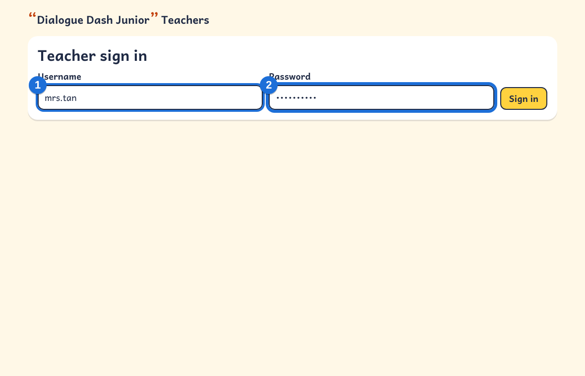
Teacher sign in.
- 1 Type the username your administrator gave you.
- 2 Type your password, then tap Sign in.
- You stay signed in for about 8 hours. Closing the tab signs you out.
- If the page says “Please sign in again”, just sign in again. Nothing is lost.
- Change your password at any time from Password at the top (see section 10).
You only ever see your own classes. The administrator sees every class.
3. Make a class
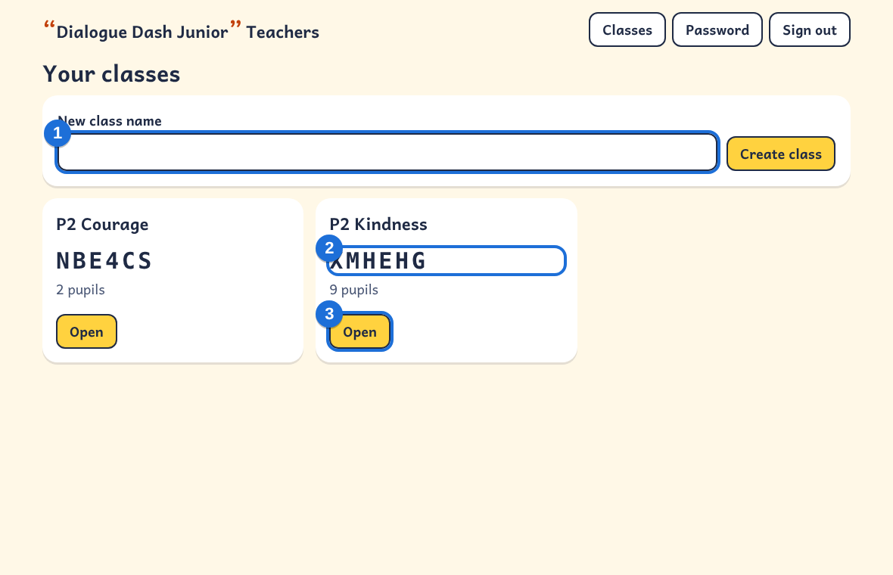
Your classes. Each card shows the class code and how many pupils are in it.
- 1 Type a class name, for example P2 Kindness, and tap Create class.
- 2 Each class gets its own class code, six letters and numbers.
- 3 Tap Open to go into a class.
You can have up to 30 classes, and up to 80 pupils in each. If you teach several classes, make one each.
4. Add your pupils
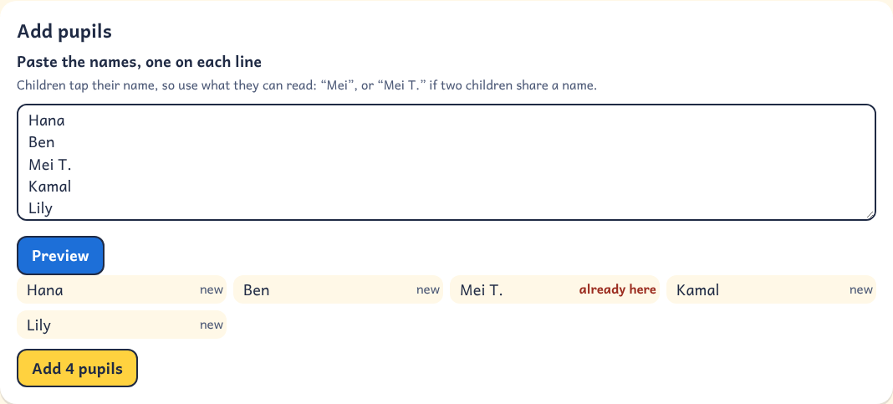
Paste the names, tap Preview, check the list, then tap Add.
- Copy the class list from your register or spreadsheet. One name on each line.
- Paste it into the box and tap Preview.
- Names already in the class are marked already here and are left out.
- Tap Add pupils.
Use names a 7-year-old can read. Children find their name on a tile and tap it. “Mei” is better than “Mei Ling Tan”. If two children share a name, use “Mei T.” and “Mei L.” — the game treats them as two different pupils.
To remove a pupil, find them in the list under Pupils and tap Remove. Their progress is deleted. This cannot be undone.
5. Print the class code card
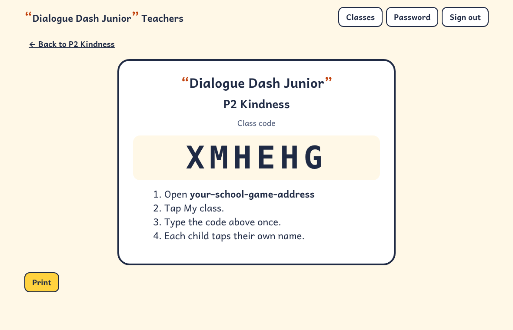
The class code card. Tap Print.
On the class page, tap Class code card, then Print. The card has the class name, the code in large letters, and four steps for the grown-up helping with the tablet.
Treat the card like a key to the room. Anyone with the code can open the class’s name list (just the names, nothing else) and sign in as any pupil. Pupils have no passwords. Keep the card with you or on the tablet trolley, and make a new code if it goes astray.
6. Set up a tablet (once per tablet)
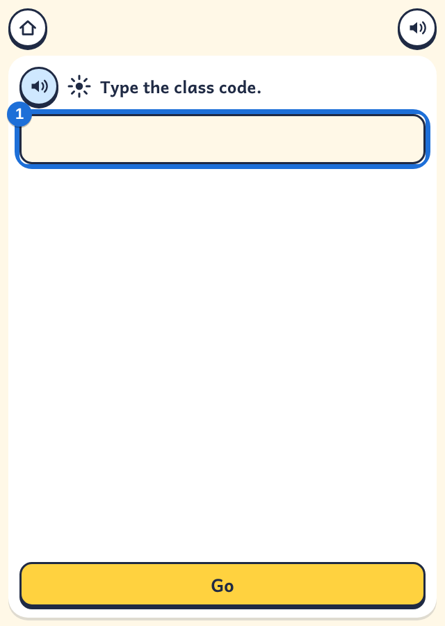
A grown-up types the code, then taps Go.
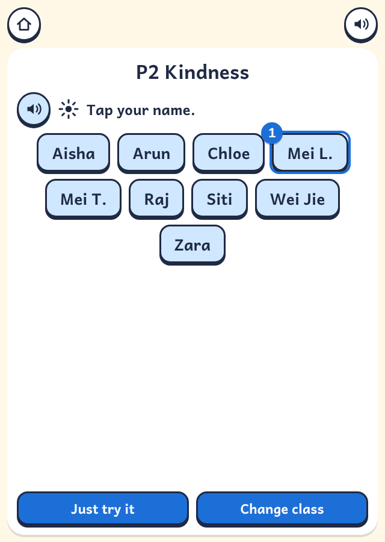
Each child taps their own name.
- Open the game address in the tablet’s browser.
- Tap My class.
- Type the class code, then tap Go. The tablet remembers it.
- Each child taps their name. Their progress loads, and they play.
- When they finish, they tap their name at the top of the Home screen to sign out. The next child taps theirs.
Just try it plays without joining the class. Nothing is saved to the class, and it is good for a demonstration.
Change class on the names screen makes the tablet forget the code.
If the Wi-Fi drops, children carry on. Their rounds are kept on the tablet and sent to the server later, once each.
7. Read the progress table
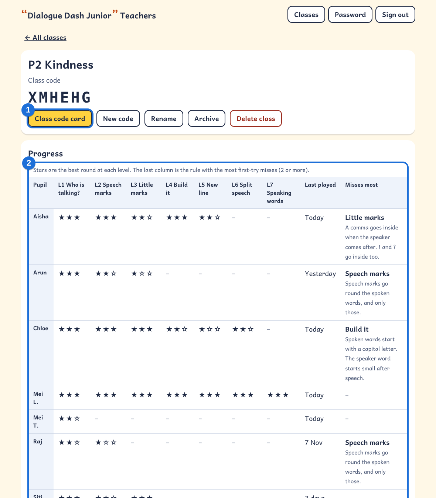
One class page: the code and actions at the top, then the progress table.
Everything you need is on one page. Open a class to see the table, add pupils, print the card, or manage the class.
8. What each column means
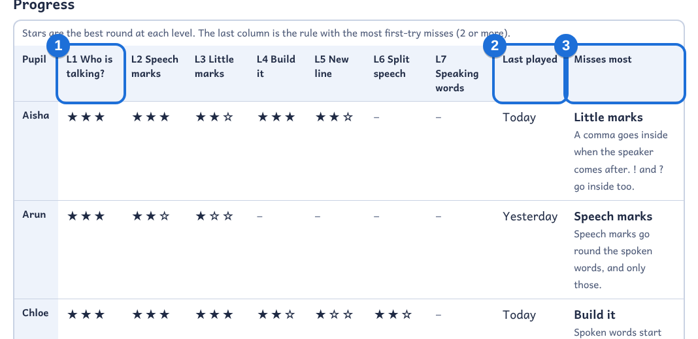
The progress table. On a computer, hover over a level heading to see its rule.
| 1 L1 to L7 | The best round at each level, as stars. A dash means not played. In a round of 5, getting all 5 right first time earns ★★★, 3 or 4 earns ★★☆, and fewer earns ★☆☆. A level counts as done once a round is finished. |
|---|
| 2 Last played | Today, Yesterday, “3 days ago”, or the date. “Never” means the pupil has not finished a round. Practise and Write it rounds count here. |
|---|
| 3 Misses most | The rule the pupil got wrong on the first try most often. It appears only after 2 or more misses on that rule, so one slip never labels a child. The rule is written underneath in plain words: use it for a quick mini-lesson. |
|---|
Stars come from level rounds only. Practise and Write it do not give stars, but their first-try mistakes still feed “Misses most”. A first-try miss is a wrong first answer, even if the child then gets it right.
9. Write it, Practise and stickers

Write it: put the marks in.
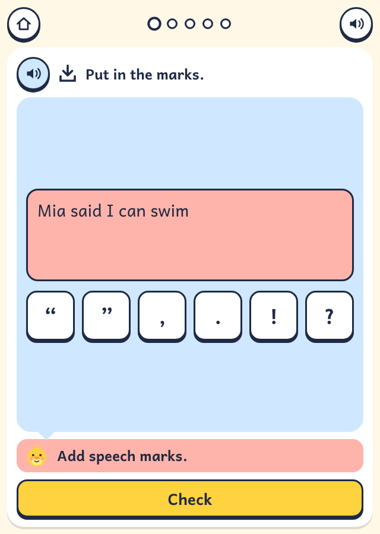
One gentle hint at a time.
- Write it gives a plain sentence with no marks. The child puts them in using six big mark buttons or the keyboard, then taps Check.
- The hint tells them one thing at a time: the words, the speech marks, a capital letter, then the other marks. After a second miss the game shows the answer and brings that question back once.
- Write it needs typing and editing, so it is harder than Levels 1 to 5. Treat it as an extension.
- Practise mixes in questions the child has missed before, with no score.
- Every finished round earns a sticker from a book of 20. There is no leaderboard and no timer.
10. Looking after your classes
| To… | Do this |
|---|
| Change a class name | Open the class, tap Rename. |
| Hand out a new code | Tap New code. The old code stops working on every tablet and signed-in children are signed out. Print the new card and type it on each tablet again. Progress is kept. |
| Hide a class at the end of term | Tap Archive. The code stops working but nothing is deleted. Tap Restore to bring it back. |
| Delete a class | Tap Delete class. All pupils and their records go. This cannot be undone. |
| Change your password | Tap Password at the top. Enter the old one, then the new one twice (8 or more characters). |
| Sign out | Tap Sign out on a shared computer. |
If a child is stuck
- “No signal” after typing the code: check the Wi-Fi. Pupils already signed in can keep playing.
- The code is “not found”: Codes never contain the letters I, L or O, or the numbers 0 or 1, so a letter that looks like one of those is a typing slip. The class may also be archived or have a new code.
- A child’s name is missing: add it on the class page, then tap Change class and re-enter the code on the tablet to refresh the list.
- No read-aloud button: that tablet has no British English voice installed. The game works without it.
11. For the administrator
The administrator is the sign-in held in the school’s Cloudflare settings (the teacher_user and teacher_password secrets). The administrator sees every class and makes teacher accounts. Pupils never have passwords.
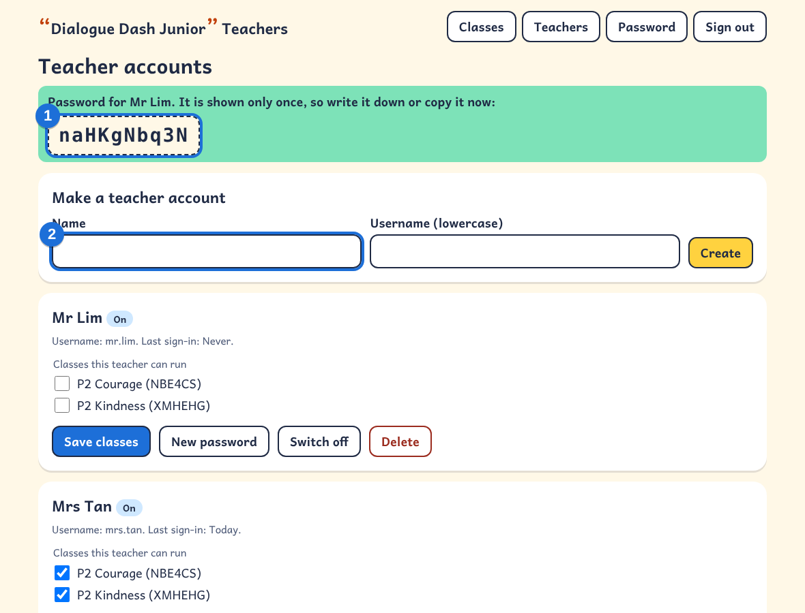
Teacher accounts. Make an account, copy the one-time password, give it to the teacher.
- 1 Tap Teachers, then fill in a name and a lowercase username and tap Create.
- 2 A password appears once. Write it down or copy it, and give it to the teacher. They can change it themselves.
- Use Classes this teacher can run and Save classes to give a teacher access to an existing class.
- New password replaces a forgotten password. Switch off blocks sign-in without deleting anything.
The admin password itself is changed in Cloudflare, not here.
12. Privacy and what we store
- The game stores the names you paste in, and stars. It asks for no email addresses, photos or birth dates. Use first names (or first name and initial).
- For each round it keeps which questions were answered right or wrong on the first try, and when.
- There are no trackers, no adverts, and no outside services. The game talks only to your school’s own address.
- Pupils who use Just try it leave nothing on the server.
- Anyone with the class code can see the class’s first names. Please keep the code card safe.
One-line summary for parents: “Children tap their first name to play a spelling-and-punctuation game. The school keeps their stars and which rules they find hard, so the teacher can help.”